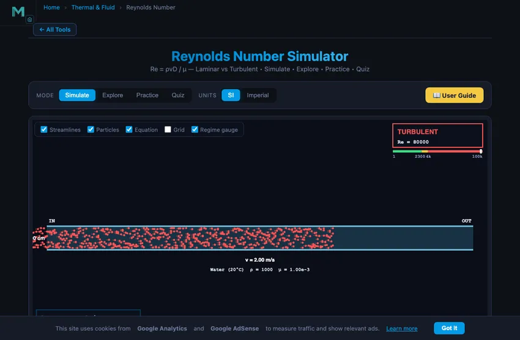

Reynolds Number Calculator
Re = ρvD / μ — Laminar vs Turbulent • Simulate • Explore • Practice • Quiz
Display Controls
Σ Live equations — values substituted
⚖ Fluid comparison — Re for current v & D
💡 What-if coach — insights
1 Overview
The Reynolds Number Simulator is the simplest visual answer to one of fluid mechanics’ most important questions: is this flow laminar or turbulent? Tune the velocity, pipe diameter, and fluid, and watch the particle paths morph from neatly parallel streamlines (laminar) to chaotic eddies (turbulent) as the live Re reading crosses 2300.
Six fluids are pre-loaded spanning seven decades of viscosity — from air (μ = 1.81×10−5 Pa·s) and water through oil and glycerin to honey (μ ≈ 10 Pa·s). Built for high-school and technical-college fluid-mechanics introductions, with Practice and Quiz modes for self-testing.
2 Configuring the System
The simulator opens with water flowing at 2 m/s through a 4 cm diameter pipe — Re ≈ 8000, well into turbulent. Watch the particles tumble through the canvas pipe with chaotic vortices. Drop the velocity below 0.06 m/s with the slider and Re falls below 2300; the particles slow and straighten into parallel streamlines.
Try the Honey Pour preset — even at 1 m/s through a 5 cm pipe, Re is only ~700: pure laminar flow no matter what. Then switch to the Water Hose preset for thousands. The colour of the pipe outline + the regime gauge at top right shift through green (laminar), gold (transitional), and red (turbulent).
3 Running the Cycle
Adjust Velocity (0.01–10 m/s) and Diameter (0.1–20 cm), pick a fluid, and read the live Re value on the canvas and in the readout cards. The particle pattern updates immediately — smooth parallel for laminar, mixed weave for transitional, full chaotic eddies for turbulent.
Eight readout cards report Re, regime, ρ, μ, ν, volumetric flow rate Q, the critical velocity for the current diameter (where Re = 2300), and the Darcy friction factor. + Custom lets you add your own fluid with a user-defined density and dynamic viscosity.
4 The Underlying Theory
Switch to Explore for concept cards in four categories. Basics covers what laminar and turbulent flow are physically, why viscosity matters, and the dimensionless-number idea. Formulas derives Re, kinematic viscosity, and the connection to friction factor. Applications covers pipelines, blood flow, aircraft wings, and microchannels. Common Errors warns about unit traps, characteristic-length confusion, and assuming Re = 2300 for non-pipe geometries.
5 Try a Problem
Practice gives randomised problems — compute Re for given v, D, fluid; find the critical velocity for laminar-turbulent transition; rearrange to find diameter or velocity. Tolerance ~5%. Show Solution walks through every step.
Quiz presents five mixed conceptual + numerical questions per session including identifying flow regime from Re, predicting the effect of changing v or D, and applying the formula in real-world contexts.
6 Engineering Notes
- Re scales with v and D linearly — halving D halves Re, doubling v doubles Re.
- Re scales inversely with viscosity, so honey (μ ~ 10 Pa·s) is virtually impossible to make turbulent at human scales.
- The 2300 threshold applies to fully-developed pipe flow. Open-channel and external flow have different transition Reynolds numbers.
- For the same density and viscosity, kinematic viscosity ν = μ/ρ is what really matters for Re — mercury has high μ but also high ρ, so its ν is moderate.
- Pair this with the Fluid Flow in Pipes, Bernoulli’s Principle, and Wind Tunnel for more dynamics practice.
Understanding the Reynolds Number and Flow Regimes

The Reynolds number (Re) is a dimensionless ratio of inertial forces to viscous forces in a flowing fluid. It is the single most important parameter for predicting whether a flow is laminar (orderly) or turbulent (chaotic). The formula is Re = ρvD / μ, where ρ is fluid density, v is mean velocity, D is the characteristic length (pipe diameter), and μ is dynamic viscosity.
Properties of Common Fluids
| Fluid | ρ (kg/m³) | μ (Pa·s) | ν (m²/s) | Re at v = 1 m/s, D = 5 cm |
|---|---|---|---|---|
| Air (20°C) | 1.20 | 1.81×10−5 | 1.51×10−5 | 3 313 |
| Water (20°C) | 1000 | 1.00×10−3 | 1.00×10−6 | 50 000 |
| Mercury | 13 534 | 1.55×10−3 | 1.15×10−7 | 437 000 |
| Vegetable oil | 920 | 0.084 | 9.13×10−5 | 548 |
| Glycerin | 1260 | 1.412 | 1.12×10−3 | 44.6 |
| Honey (20°C) | 1420 | 10.0 | 7.04×10−3 | 7.10 |
Flow Regimes for Pipe Flow
For fully-developed flow inside a circular pipe, three regimes are conventional: laminar (Re < 2300), transitional (2300 ≤ Re ≤ 4000), and turbulent (Re > 4000). Laminar flow has a smooth parabolic velocity profile and low friction; turbulent flow has a flatter profile and much higher friction. The transition is not razor-sharp — it depends on inlet conditions, surface roughness, and disturbances — but 2300 is a reliable engineering rule of thumb.
Why Viscosity Dominates Small-Scale Flow
Halving D or v halves Re. Inversely, multiplying viscosity by 10 divides Re by 10. This is why honey, syrup, and oil almost always flow laminar at human scales — viscosity dwarfs inertia. It is also why microfluidics (lab-on-chip devices with channels under 100 μm) are inherently laminar: D is so small that Re stays well below 1, and the only way to mix two streams is by diffusion or careful geometry.
Engineering Applications
The Reynolds number governs design in nearly every fluid-handling system. Pipelines are sized so that flow is comfortably turbulent for good mixing and heat transfer, while keeping pumping costs reasonable. Aircraft wings use a chord-based Re — whether the boundary layer is laminar or turbulent affects lift and drag dramatically. Blood flow in the aorta sits at Re ≈ 4000 (top of the transitional range), while capillaries are deeply laminar. Heat exchangers exploit turbulent flow for vastly better heat transfer than laminar.
The Critical Velocity
For a given fluid and pipe diameter, the critical velocity is the speed at which Re crosses 2300: vcrit = 2300 · μ / (ρ · D). Below vcrit the flow is laminar; above, it transitions to turbulent. For water in a 1 cm pipe, vcrit ≈ 0.23 m/s — even a slow water tap is already turbulent. For honey in the same pipe, vcrit would need to be > 1600 m/s — physically impossible.
Why “Inertia vs Viscosity” Actually Makes Sense
The standard textbook line is that Re is a ratio of inertial forces to viscous forces. That is true but unsatisfying. The intuition: how much does a parcel of fluid resist being deflected (inertia, depends on momentum ρv) compared to how much the surrounding fluid drags on it sideways (viscous, depends on shear gradient μv/D)? When inertia dominates, a perturbation grows into a swirl — you get turbulence. When viscosity dominates, perturbations damp out — you get laminar flow. Re is just the cleanest dimensionless way to write that ratio.
The same dimensionless ratio shows up everywhere: aircraft wings (where D is wing chord), insect flight (Re ~100, deeply laminar, requires totally different aerodynamics from aircraft), bacterial swimming (Re ~10−4, “swimming in tar” as Edward Purcell put it), even stirred coffee (Re ~105, fully turbulent, which is why the milk and coffee mix in seconds).
Three Specific Calculations Worth Internalising
| Scenario | Re | Regime |
|---|---|---|
| Water from a tap, 10 mm pipe, 1 m/s | 1000×1×0.01/10−3 = 10,000 | Turbulent |
| Honey through the same pipe at the same speed | 1420×1×0.01/10 = 1.4 | Deeply laminar |
| Blood in the aorta, 25 mm diameter, 0.5 m/s | 1060×0.5×0.025/3.5×10−3 = 3800 | Top of transitional |
| Air at the wingtip of a 747 cruising at 250 m/s, 6 m chord | 0.4×250×6/1.4×10−5 = 4.3×107 | Deep turbulent |
| A bacterium swimming at 30 µm/s in water | 1000×3×10−5×2×10−6/10−3 = 6×10−5 | Stokes (creeping) flow |
Notice the range: from 10−5 for a bacterium to 107 for an airliner. Twelve orders of magnitude. The same physical equations describe both, with Re as the parameter that controls which regime you’re in.
When the 2300/4000 Boundary Lies to You
Those textbook numbers are for an idealised case: long straight smooth pipes with carefully controlled inlet. Real engineering pipes rarely meet that ideal:
- Disturbed inlet. A 90° elbow or sudden contraction injects turbulence into otherwise laminar flow. Transition may start as low as Re ~1500.
- Carefully smooth inlet. Reynolds himself, with a flared bell-mouth entry and very smooth pipe, kept laminar flow up to Re ~13,000 in lab experiments. The textbook 2300 is conservative.
- Pipe roughness. Rough pipes destabilise laminar flow earlier and produce fully-turbulent flow at lower Re than smooth pipes.
- Curved pipes (coiled tube reactors). Curvature stabilises laminar flow through Dean vortices. Transition can be delayed to Re > 10,000.
References
- Reynolds, O. (1883) — An experimental investigation of the circumstances which determine whether the motion of water shall be direct or sinuous. Phil. Trans.
- Purcell, E. M. (1977) — Life at low Reynolds number. Am. J. Phys. 45, 3. A classic, short, beautifully written paper.
- White, F. M. — Fluid Mechanics, 8th ed., Chapter 6.
Explore Related Simulators
If you found this Reynolds number simulator helpful, explore our Viscosity Experiment Virtual Lab, Continuity Equation, Fluid Flow in Pipes, Bernoulli’s Principle, Wind Tunnel, Pascal’s Law, the Centrifugal Pump Test Rig, and the Hydraulic Turbine Test Rig for more practice.
Density 100–15 000 kg/m³. Viscosity 1e-6 to 100 Pa·s.